City includes largest ski area in the U.S., is the main location of the Sundance Film Festival, home of the United States Ski Team and has many retailers, clubs, bars, and restaurants, nearby reservoirs, hot springs, forests, and hiking and biking trails
General Information
How to Get There
From Salt Lake City (32 mi): Take I-80 E toward Cheyenne, then take exit 145 for UT-224 toward Kimball Junction and follow UT-224 into Park City.
Overview
Park City is a mountain resort city of about 8,500 residents in the Wasatch Range of northern Utah, roughly 30 minutes from Salt Lake City. It is best known for skiing: Park City Mountain and Deer Valley Resort are among the largest and most highly rated ski areas in North America, and the city is the headquarters of the U.S. Ski and Snowboard team.
The city is also famous as the longtime home of the Sundance Film Festival each January, and it hosted many events at the 2002 Winter Olympics. Visitors come for winter sports, a historic Main Street of galleries, restaurants, and bars, and a summer season of hiking, mountain biking, and festivals.
History
Park City began in 1868 when soldiers prospecting in the hills found silver, and the town boomed through the 1880s with mines such as the Silver King and Ontario. Fires, including a major one in 1898, and falling silver prices slowed the mining economy, and the last mines closed in the early 1980s. Skiing began to replace mining in the 1960s with the opening of Treasure Mountain, later Park City Mountain, and the Sundance Film Festival moved to the city in 1981. The 2002 Winter Olympics brought new facilities and international attention.
Sightseeing and Popular Landmarks
Historic Main Street is lined with preserved mining-era buildings, including the Egyptian Theatre, and the town's trolley and walking tours explain its history. Utah Olympic Park offers ski jumps, a museum, and a bobsled and zip-line experience, and Park City Mountain and Deer Valley Resort have gondolas and chairlifts that run in summer for views of the Wasatch Range. The Alpine Coaster, the Olympic Cauldron at Olympic Plaza, and the Kimball Junction shops are also popular stops.
Culture and Museums
The Park City Museum, in the old City Hall and territorial jail on Main Street, covers the town's mining history, and the Egyptian Theatre hosts live performances and film screenings. The Sundance Film Festival and the Kimball Art Center's galleries, along with the Deer Valley Music Festival and Park Silly Sunday Market in summer, give the city a lively cultural calendar. The Utah Olympic Legacy Foundation's museum at Utah Olympic Park displays the history of the 2002 Games and winter sports.
Parks
Park City has more than 400 miles of trails for hiking and biking, including the Mid Mountain Trail and routes around Bloods Lake and Silver Lake in the nearby Wasatch-Cache National Forest. Round Valley, Willow Creek Park, and City Park offer open space, and Jordanelle State Park and Deer Creek State Park provide boating and fishing within a short drive. Thaynes Canyon and the Rail Trail connect downtown with the surrounding hills.
Seasons and Weather
Park City has a humid continental climate at about 7,000 feet in elevation. Winters are cold and snowy, with highs in the 30s°F and about 300 inches of snow a year on the upper slopes, and the ski season usually runs from late November to mid-April. Summers are mild and dry, with highs in the 70s and 80s°F and cool nights, and fall brings aspen color along the trails.
Things to Do
Explore Historic Main Street
Park City's Historic Main Street is lined with beautifully preserved mining-era buildings that now house restaurants, boutiques, art galleries, cafés, and entertainment venues. Visitors can stroll along the walkable downtown district while enjoying mountain views and learning about the town's rich history.
Enjoy Park City Mountain Resort
Park City Mountain is one of the largest ski resorts in North America, offering extensive terrain for skiing and snowboarding during winter. In the summer, the resort features hiking, mountain biking, scenic chairlift rides, alpine slides, ziplining, and family-friendly mountain activities.
Visit Utah Olympic Park
Built for the 2002 Winter Olympic Games, Utah Olympic Park offers visitors the opportunity to learn about Olympic history while experiencing attractions such as museum exhibits, ski jump viewing areas, zip lines, ropes courses, and seasonal adventure activities.
Experience the Sundance Film Festival Legacy
Park City is internationally recognized as the longtime home of the Sundance Film Festival. Throughout the year, visitors can explore the town's thriving arts and cultural scene, including theaters, live performances, galleries, and special events.
Discover Outdoor Recreation in Every Season
Beyond skiing, Park City offers hiking, mountain biking, fly fishing, golf, horseback riding, snowshoeing, wildlife viewing, and scenic drives. The surrounding Wasatch Mountains provide access to hundreds of miles of trails and breathtaking alpine scenery.
Top Trails
Bloods Lake Trail
Length: Approximately 2.8 miles round trip
Elevation Gain: Approximately 500 feet
Difficulty: Easy to Moderate
One of the most popular hikes near Park City, this trail leads to a beautiful alpine lake surrounded by forests and mountain scenery. The route is family-friendly and is especially popular during summer and early fall.
Armstrong Trail
Length: Approximately 3.5 miles one way
Elevation Gain: Approximately 1,300 feet
Difficulty: Moderate
Located on Park City Mountain, Armstrong Trail climbs through aspen groves and evergreen forests while providing scenic views of Park City and the surrounding Wasatch Mountains. It is popular with hikers, trail runners, and mountain bikers.
Mid Mountain Trail
Length: Approximately 23 miles one way
Elevation Gain: Moderate
Difficulty: Moderate
One of the region's signature trails, Mid Mountain traverses the slopes above Park City and Deer Valley, offering expansive mountain views, wildflower meadows, and excellent opportunities for hiking and mountain biking.
Silver Lake Trail
Length: Approximately 4.5 miles round trip
Elevation Gain: Approximately 900 feet
Difficulty: Moderate
This scenic trail provides access to an alpine lake surrounded by forests and mountain peaks. Visitors enjoy peaceful scenery, seasonal wildflowers, and opportunities for wildlife viewing.
This article uses material from Wikipedia as well as information from official tourism and institutional sources. Key references include Visit Park City, Park City Mountain, Utah Olympic Legacy Foundation, Uinta-Wasatch-Cache National Forest, Sundance Institute, and National Weather Service Salt Lake City. Wikipedia material is from the article "Park City, Utah", released under the Creative Commons Attribution-Share-Alike License 3.0.
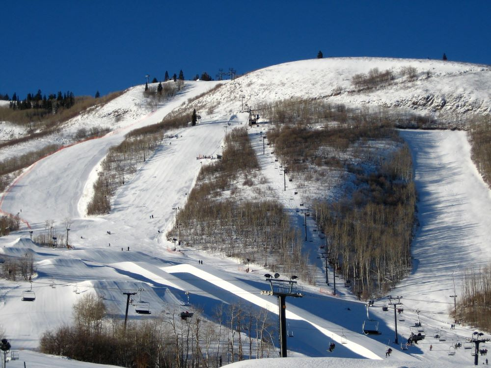

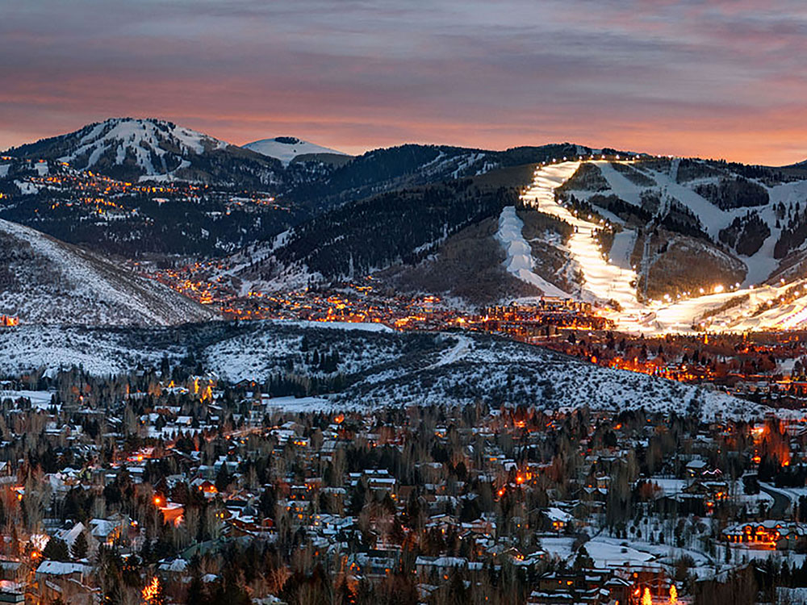

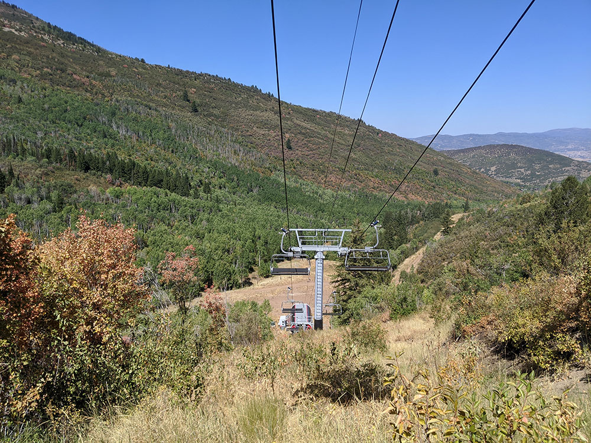
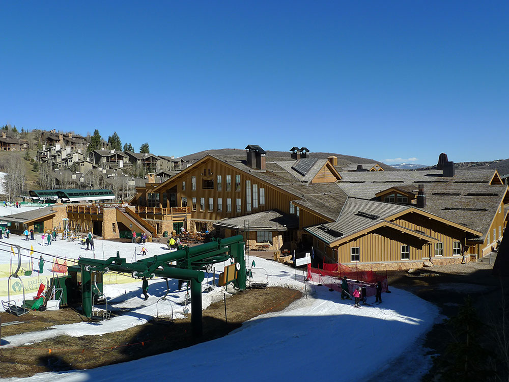

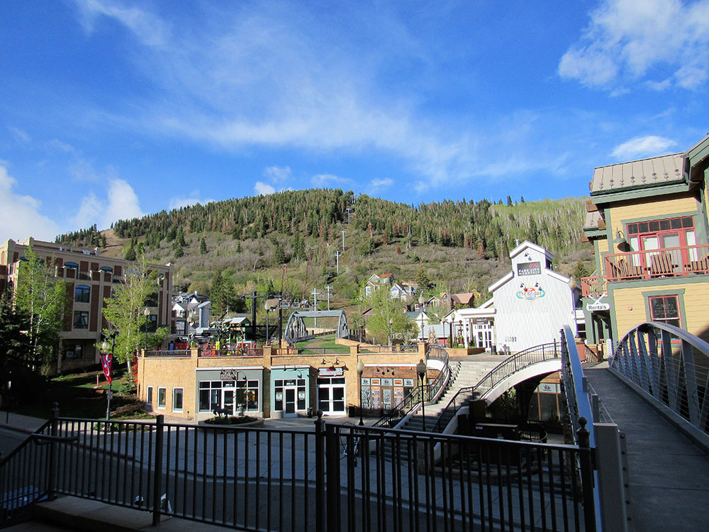

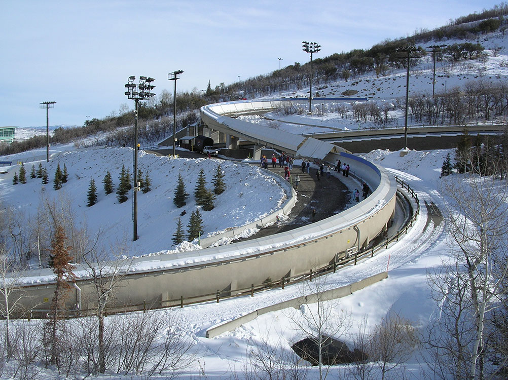

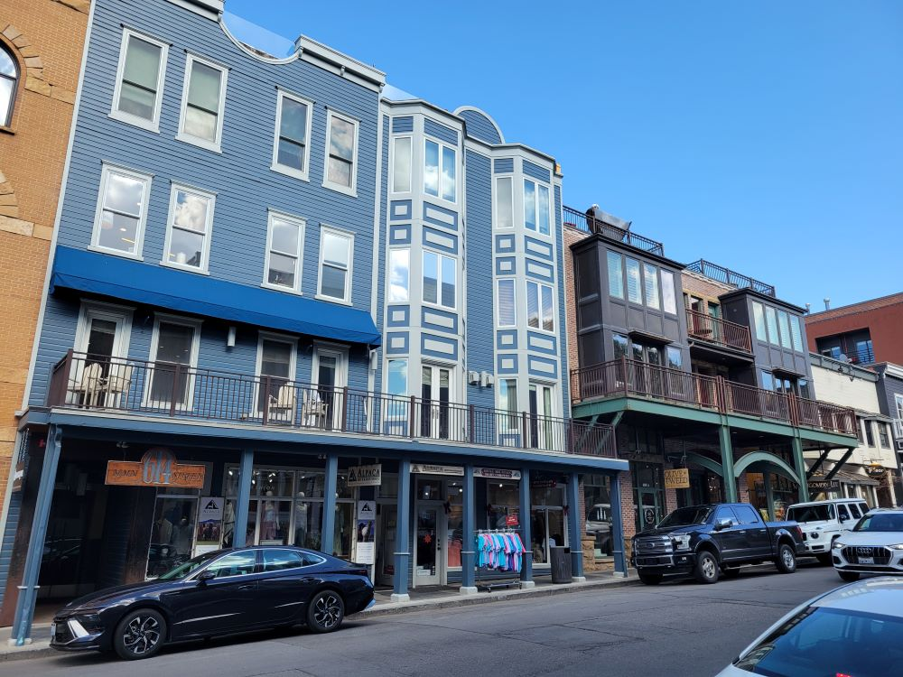
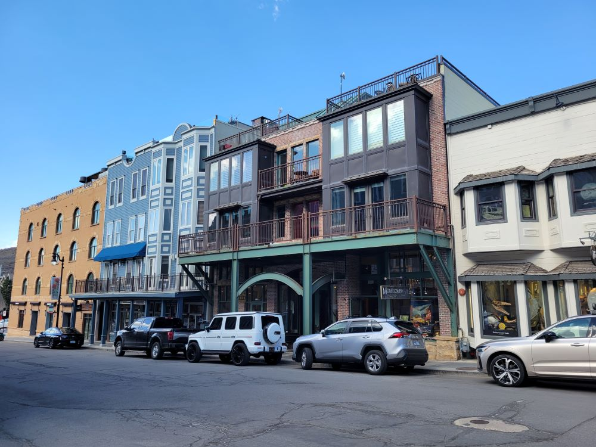
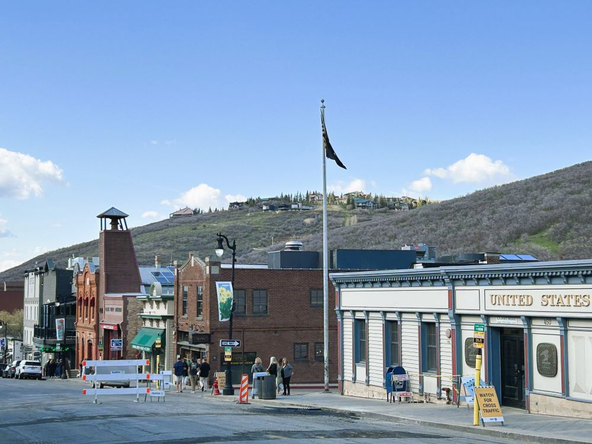
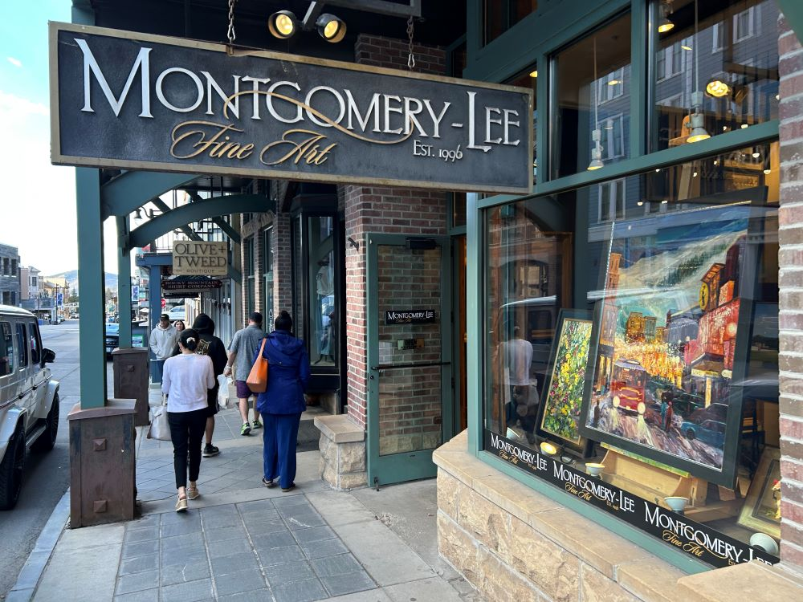
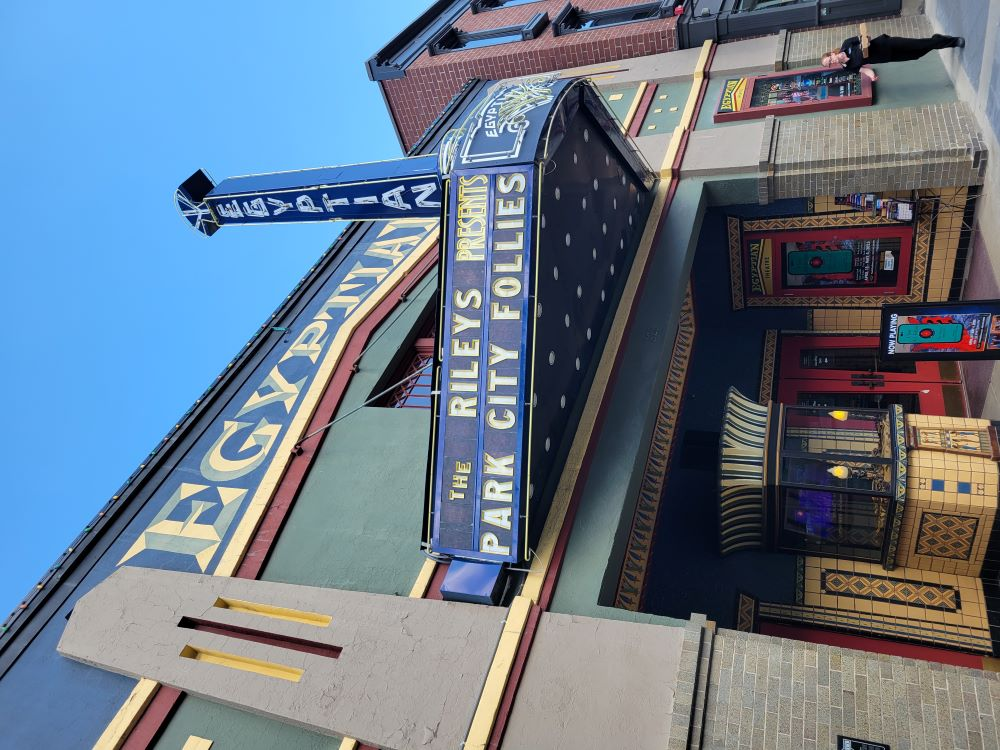